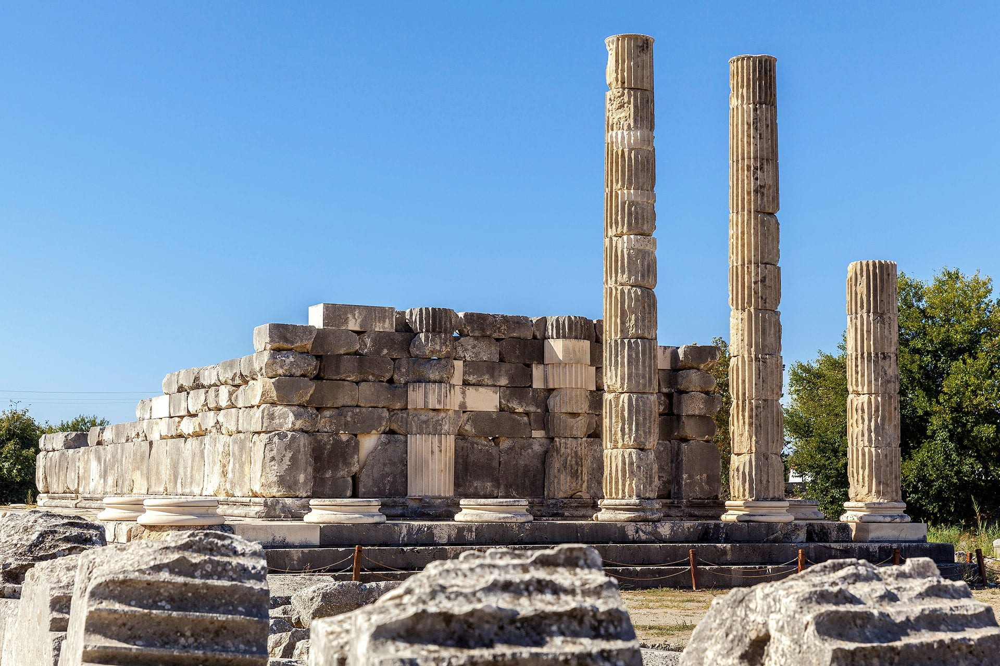

LETOON ANTİK KENTİ

09.12.1988 tarihi ve 484 sıra numarasıyla UNESCO Dünya Mirası Listesi’nde yer alan Letoon Antik Kent'i, Likya yürüyüş yolu rotasındadır. Kaş, Fethiye, Kalkan, Patara gibi çevre turizm merkezlerinden her gün yüzlerce turist bu alanı keşfetmek için gelmektedir. Seydikemer’in Kumluova Mahallesi’nde bulunan Letoon antik kentinin MÖ yedinci yüzyılda kurulduğu tahmin edilmektedir. Letoon Antik Çağ’da Likya’nın dini merkezi konumundadır. Bu kutsal alandaki Leto, Apollon ve Artemis tapınakları tarihi açıdan çok önemlidir.
Artemis ve Apollo’nun annesi Leto’ya adanmış olan en büyük tapınak, batıda bulunan ve Peripteros tarzında yapılmış Leto Tapınağıdır. Bu tapınak civarında MÖ 4. yüzyıla ait olduğu düşünülen ve üç dille (Grekçe, Aramice ve Likçe) yazılmış bir kitabe bulunmuştur ve halen Fethiye Müzesinde sergilenmektedir. Doğuda yer alan Dor tarzında yapılmış olan Apollo Tapınağı, Leto Tapınağından daha az korunmuş durumdadır. Her iki tapınağın ortasında bulunan Artemis Tapınağı en küçük olanıdır. Bu üç tapınağın güneybatısında bir çeşme (su kaynağı), doğu kısmında ise bir kilise bulunur.Letoon antik kenti içerisinde arka tarafını bir tepenin yamacına dayamış büyük bir antik tiyatro yer almaktadır.